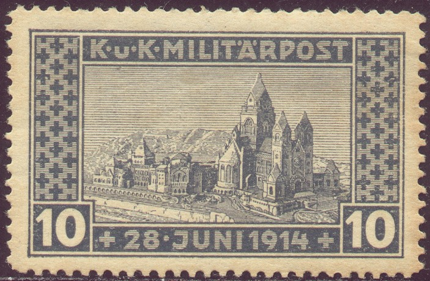

Return To Catalogue - Bosnia and Herzegowina part 1 - Part 2 - Part 3 - Yugoslavia - Yugoslavia, issues for Bosnia and Herzegowina
Note: on my website many of the
pictures can not be seen! They are of course present in the
catalogue;
contact me if you want to purchase the catalogue.
10 (+2) h violet 15 (+2) h red 40 (+2) h blue
These stamps have perforation 12 1/2, the 15 h also exists perforated 11 1/2. I've also seen all three stamps imperforate.
Value of the stamps |
|||
vc = very common c = common * = not so common ** = uncommon |
*** = very uncommon R = rare RR = very rare RRR = extremely rare |
||
| Value | Unused | Used | Remarks |
| 10 h | c | c | |
| 15 h | c | c | |
| 40 h | c | c | |

3 h olive 5 h green 6 h violet 10 h brown 12 h blue 15 h red 20 h brown 25 h violet 30 h green 40 h olive 50 h green 60 h red 80 h blue 90 h lilac 2 K red on yellow 3 K green on blue 4 K red on green 10 K violet on grey
These stamps have perforation 12 1/2. A 1 K olive on green was prepared but never issued.
Value of the stamps |
|||
vc = very common c = common * = not so common ** = uncommon |
*** = very uncommon R = rare RR = very rare RRR = extremely rare |
||
| Value | Unused | Used | Remarks |
| 3 h | c | c | |
| 5 h | c | c | |
| 6 h | * | * | |
| 10 h | c | c | |
| 12 h | * | * | |
| 15 h | c | c | |
| 20 h | c | c | |
| 25 h | c | c | |
| 30 h | c | c | |
| 40 h | * | c | |
| 50 h | * | c | |
| 60 h | * | c | |
| 80 h | c | c | |
| 90 h | * | * | |
| 2 K | * | * | |
| 3 K | *** | *** | |
| 4 K | ** | *** | |
| 10 K | ** | ** | |


10 (+10) h green 15 (+10) h red 40 (+10) h lilac
These stamps are perforated 12 1/2.
Value of the stamps |
|||
vc = very common c = common * = not so common ** = uncommon |
*** = very uncommon R = rare RR = very rare RRR = extremely rare |
||
| Value | Unused | Used | Remarks |
| 10 h | c | c | |
| 15 h | c | c | |
| 40 h | c | c | |
Non-issued stamps, similar to the 40 h design, but with inscription "KUK MILITARPOST" in a straight line at the top of the stamp. In this design exist: 2 h orange, 3 h grey, 5 h light green, 6 h bluish green, 10 h brown, 20 h red, 25 h blue, 45 h grey, 50 h dark green, 60 h violet, 70 h yellow, 80 h lilac and 90 h violet:

Unissued stamp.
1 h yellow and red on black 2 h yellow and red on black 3 h yellow and red on black 4 h yellow and red on black 5 h yellow and red on black 6 h yellow and red on black 7 h yellow and red on black 8 h yellow and red on black 10 h yellow and red on black 15 h yellow and red on black 20 h yellow and red on black 50 h yellow and red on black 200 h green and red on black
Overprinted "KRALJEVSTVO SRBA, HRVATA I SLOVENANCA PORTO", in latin or cyrillic caracters, issued for Yugoslavia see Yugoslavia issues for Bosnia and Herzegowina.
Value of the stamps |
|||
vc = very common c = common * = not so common ** = uncommon |
*** = very uncommon R = rare RR = very rare RRR = extremely rare |
||
| Value | Unused | Used | Remarks |
| 1 h | c | c | |
| 2 h | * | c | |
| 3 h | c | c | |
| 4 h | * | * | |
| 5 h | * | c | |
| 6 h | c | c | |
| 7 h | * | * | |
| 9 h | * | * | |
| 10 h | ** | c | |
| 15 h | c | c | |
| 20 h | *** | * | |
| 50 h | * | c | |
| 200 h | *** | * | |
Forgeries exist of these stamps
2 h red 4 h red 5 h red 6 h red 10 h red 15 h red 20 h red 25 h red 30 h red 40 h red 50 h red 1 K blue 3 K blue
The perforation of these stamps is 12 1/2. Surcharged with 'Centesimi' they were used for the Austrian military post in Italy.
Value of the stamps |
|||
vc = very common c = common * = not so common ** = uncommon |
*** = very uncommon R = rare RR = very rare RRR = extremely rare |
||
| Value | Unused | Used | Remarks |
| 2 h | c | c | |
| 4 h | c | c | |
| 5 h | c | c | |
| 6 h | c | c | |
| 10 h | c | c | |
| 15 h | * | * | |
| 20 h | c | c | |
| 25 h | * | * | |
| 30 h | * | * | |
| 40 h | ** | ** | |
| 50 h | *** | ** | |
| 1 K | ** | ** | |
| 3 K | *** | *** | |

(September issue)
The following values were issued in July: 2 n, 4
n, 8 n, 17 n, 25 n, 33 n, 42 n, 63 n, 83 n, 1.25, 1.67, 2.08,
3.13, 4.17, 6.25, 8.33, 12.50, 16.67, 20.83, 31.25, 41.67, 62.50
and 83.33. The higher values are very rare, of some of them only
a few were sold. The 2 n has the colour red and yellow, all the
other red and green.
In September 1897 a slightly different design was issued with
larger numbers in the values: 1 n, 2 n, 4 n (image above), 8 n,
10 n, 12 n, 16 n, 20 n, 24 n, 30 n, 36 n, 40 n, 48 n, 64 n and 80
n (all in the colours red with lilac underprint). Also some
higher denominations: 1 Fl green, 1Fl20 blue, 1Fl60 lilac, 2Fl40
red, 3Fl20 green, 4 Fl blue, 6 Fl orange, 8 Fl grey, 12 Fl
orange, 16 Fl red and 24 Fl violet.
The following values were issued: 1 n, 2 n, 3 n, 4 n, 5 n, 7 n, 10 n, 12 n, 15 n, 20 n, 25 n, 30 n (all in brown with yellow underprint), 40 n, 50 n, 60 n (these three values in blue with blue underprint), 80 n, 90 n (these two values in red with lilac underprint), 1 Fl, 2 Fl, 3 Fl, 4 Fl, 5 Fl, 6 Fl, 8 Fl, 9 Fl, 10 Fl, 12 Fl, 15 Fl, 20 Fl and 25 Fl (all Fl values in green with green underprint).


The following values were issued with inscription
"1899": 2 h blue and blue, 4 h red and blue, 6
h green and blue, 8 h brown and blue, 10 h green and blue, 14 h
blue and red, 20 h red and red, 26 h green and red, 30 h brown
and red, 38 h olive and red, 40 h blue and green, 50 h red and
green, 60 h green and green, 64 h brown and green, 80 h olive and
green. In larger sizes: 1 K blue and blue, 2 K red and blue, 4 K
green and blue, 5 K brown and blue, 6 K olive and blue, 8 K blue
and lilac, 10 K lilac, 12 K green and lilac, 14 K brown and
lilac, 16 K olive and lilac, 20 K blue and green, 24 K lilac and
green, 30 K green, 40 K brown and green, 50 K olive and green.
In 1912 this set was re-issued with inscription "1912"
(29 values, ranging from 2 h to 50 K), all 'Heller' values have
colour red and blue, all higher demoninations have colour green
and red.
In 1916 this set was re-issued again with inscription "1916".
I have seen the values 2 h, 4 h, 6 h, 8 h, 10 h, 14 h, 20 h, 26
h, 30 h, 38 h, 40 h, 50 h, 60 h, 64 h, 80 h (all in violet and
red); 1 K,,2 K, 4 K, 5 K, 6 K, 8 K, 10 K, 12 K, 16 K (all in
purple and green).

Bosnia stamps, with overprint "SCHAUMWEIM- STEUER" or
"SCHAUMWEIN- NACHSTEUER", issued for sparkling wine
tax.
In the Bosnia 1912 design, with overprint "SCHAUMWEIN-
STEUER" I have seen the following values (issued in
1919):
"HELLER 25 HELLER" on 1 Kr red and green
"HELLER 50 HELLER" on 1 Kr red and green
"KRONE 1 KRONE" on 1 Kr red and green
"KRONEN 2 KRONEN" on 1 Kr red and green
"KRONEN 3 KRONEN" on 8 h blue and red
"KRONEN 3 KRONEN" on 1 Kr red and green
"KRONEN 9 KRONEN" on 14 h blue and red
"KRONEN 10 KRONEN" on 4 Kr red and green
"KRONEN 12 KRONEN" on 8 h blue and red
"KRONEN 15 KRONEN" on 30 h blue and red
"KRONEN 18 KRONEN" on 14 h blue and red
"KRONEN 21 KRONEN" on 14 h blue and red
"KRONEN 27 KRONEN" on 30 h blue and red
"KRONEN 33 KRONEN" on 30 h blue and red
"KRONEN 69 KRONEN" on 30 h blue and red
"KRONEN 117 KRONEN" on 30 h blue and red
"KRONEN 180 KRONEN" on 64 h blue and red
--------------------------------------------------------------------
"90" (red) on "KRONEN 4 KRONEN" on 26 h blue
and red
"180" (red) on "KRONE 1 KRONE" on 6 h blue
and red
"400" (red) on "KRONEN 6 KRONEN" on 30 h blue
and red
"450" (red) on "KRONEN 6 KRONEN" on 30 h blue
and red
"450" (red) on "KRONEN 8 KRONEN" on 4 h blue
and red
"900" (red) on "KRONEN 9 KRONEN" on 26 h blue
and red
"3600" (red) on "KRONEN 15 KRONEN" on 30 h
blue and red
"7200" (red) on "KRONEN 117 KRONEN" on 38 h
blue and red
"20,000" (red) on "KRONEN 48 KRONEN" on 38
blue and red
"20,000" (red) on "KRONEN 240 KRONEN" on 64
blue and red
--------------------------------------------------------------------
With "SCHAUMWEIN- NACHSTEUER"
overprint
"KRONEN 7.20 KRONEN" on 6 h blue and red


With overprint "K.u.k. Militar- verwaltung", 10 h on 80
h blue and red. I have also seen a 1 h on 2 h blue and red (in
two types, note the different thickness of the "1"s).

Overprinted "K.u.k Miltarverwaltung in Serbien"


Inscription "Desetina Zehent Sarajevo", issued around
1890.

Inscription 'SECER'
Some kind of red cross label, inscription 'B H 4 4' in the
corners and a red cross in the center.

{kind=link}
{kind=link}
{kind=link}